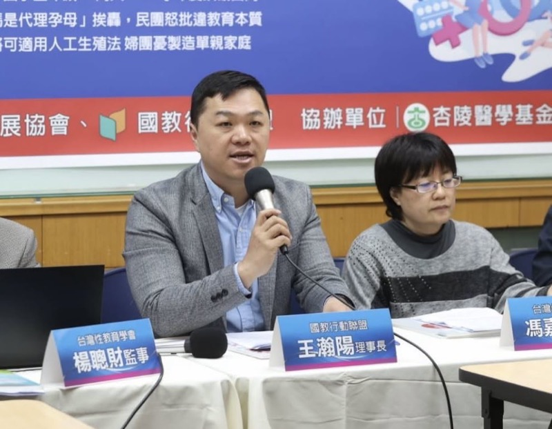

社工保證人地位入法後，台灣兒少保護體系需要哪些制度改革？
兒少保護體系改革的核心方向是什麼？
- 核心觀點：剴剴案揭露台灣兒少保護法制四大結構性漏洞——行政罰與刑事責任脫節、社工師法缺乏刑法地位規範、機構兩罰制度闕如、系統性學習機制缺位。國教盟提出五大修法工程與具體條文草案。
- 關鍵數據：全球主要法治國家（美、英、德、日、韓）對兒保社工之問責均以行政程序與組織責任為主軸，幾乎不以過失致死追訴第一線社工。美國約17個州推定社工行為具有善意。
- 行動呼籲：五大修法工程可直接轉化為條文草案，供立委辦公室、法案審查委員會與相關部會參酌，讓「責任與權限對齊」、「兒少保護與專業治理同步提升」。

台灣兒少保護法制存在哪些結構性漏洞？
剴剴案一審判決不僅是個案裁判，更照出台灣兒少保護法制至少四項結構性漏洞。[1]
第一，行政罰與刑事責任脫節。《兒少權法》雖規定訪視義務與強制通報義務，但違反之法律效果主要停留在行政罰層次。就收出養社工此類職務上具保證人地位者，究竟需達到何種注意程度，法律並無明確標準，審判時必須大量倚賴刑法總則之抽象規範與學說倒推。[2]
第二，《社會工作師法》缺乏刑法地位規範。該法著重於專業資格與倫理自律，對社工在刑法上之地位並無明文。剴剴案之所以成為指標案例，正是因為過去從未有社工被認定具保證人地位之判決先例。[3]
第三，機構兩罰制度付之闕如。當機構所屬人員因業務行為成立過失致死時，機構本身通常不承擔刑事層次之責任。相較於食安、環保、金融犯罪等領域成熟的法人罰金與兩罰制度，兒少保護領域明顯落後。[1]
第四，系統性學習與獨立檢討機制缺位。我國「重大兒童及少年虐待事件防治小組實施計畫」屬行政計畫層級，涵蓋範圍原本排除家外施虐案件（剴剴案後始修正），檢討報告的公開性與學習導向不足，亦欠缺獨立性設計。相較於英國 CSPR 制度，台灣在法源強度、涵蓋完整性、透明度與獨立性各層面均有明顯落差。[4]
此外，委外責任鏈的「四大斷點」在剴剴案中徹底暴露：委外契約有分工但法律未明文化、督導角色在外部責任歸屬上被邊緣化、高風險升級機制缺少明確觸發條件、涉訟支持由「得提供」而非「應提供」。社安網「一主責、多協力」的設計理念在實務層面完全失靈——主責認定無統一標準、資訊不互通、跨機構督導缺位、主管機關監督角色缺位。[5]
五大修法工程的具體內容是什麼？
修法的核心邏輯不是「弱化兒保責任」，而是「讓責任對位」——確保每一層級的行為者承擔與其權限相稱的責任，同時為善盡職責的專業人員提供合理的程序保障。以下五大修法工程可直接轉化為條文草案。[1]
工程一：明定社工職務義務範圍與義務邊界
建議於兒少權法第64條之後增訂第64條之1，規定委外案件應以書面明定主管機關、督導人員、主責社工、安置單位等之分工、通報層級、聯合訪視與危機升級機制。未完成書面分工者，不得僅以受託事實推定單一社工負全部保護責任。此一條文直接回應剴剴案中各方對「主責社工」認知分歧的問題。
工程二：建立組織共同責任與多層級決策鏈
建議於兒少權法第70條之後增訂第70條之2，明定三歲以下兒童或經評估為高風險之兒少，出現非意外傷勢、營養或體重異常下降、反覆拒訪等6類高風險徵候時，應於24小時內完成第二專業複核，並視情形啟動聯合訪視、醫療檢視、警政協助或緊急安置。受託機構及督導未為複核者，承擔相應責任。[6]
工程三：訂定合理免責條件（程序合規推定）
建議修正社工師法第20條並增訂第20條之1。社工已依規定頻率訪視、發現異常已通報、訪視受阻已升級者，推定已盡專業上必要注意義務。故意、重大過失、明知不實記載者除外。同步將涉訟法律協助從「得提供」修正為「應提供」。此設計參考美國約17個州推定社工善意的制度經驗。[7]
工程四：高風險案件強制配套法定化
四大機制由行政指引升格為法定義務：雙社工制（高風險案件由二名以上社工共同訪視）、不預約訪視制度化、跨專業共同評估（納入幼兒專責醫師與警政）、跨單位即時資訊共享平台。搭配「12點兒虐臨床表徵」等專業檢核工具納入法定訪視指引。
工程五：刑事責任前置專業審查機制
建議增訂社工師法第20條之2，檢察官就社工因執行兒保業務涉嫌過失犯罪起訴前，應徵詢中央主管機關設置之社會工作專業審查委員會意見。委員會由資深兒保社工、社工學者、法律學者、兒科醫師與社會公正人士組成。此設計類似醫療糾紛之醫審會鑑定機制，建立行政、懲戒、刑事三軌分流。[1]
全球主要國家如何處理兒保社工的法律責任？
跨國比較分析顯示，全球主要法治國家對兒保社工的法律責任處理有四項共通原則：幾乎不以刑事過失致死追訴第一線社工；若有追訴必涉及極端情節（如故意漠視、偽造紀錄）；多數透過善意豁免、組織責任、系統審查等機制平衡個人責任與制度檢討；重大案件必須有外部檢討機制。[1]
德國：多人評估＋書面分工
保證人理論的發源國。2006年不來梅凱文案（2歲男童死於吸毒養父冰箱中）促成2012年《聯邦兒童保護法》立法。SGB VIII §8a明文要求多名專業人員共同評估危險。台灣最值得借鏡的是「多人評估＋書面分工＋高風險個案固定複核」模式。[6]
美國：善意豁免＋公民審查
1989年DeShaney案確立基本框架。發展出聯邦有限豁免與州善意豁免兩套機制，約17個州推定社工行為具善意，13個州僅在惡意或重大過失時排除豁免。少數刑事追訴案件均涉及故意漠視或偽造紀錄等極端情節。[7]
英國：系統思維取代究責文化
Baby P案後，上訴法院裁定主管被撤職「本質上不公正且違法」。發展出學習導向的嚴重案件審查（CSPR）、專業監管機構Social Work England、以及Munro教授2011年報告奠定的系統思維政策方向。社工被解僱但未被刑事追訴。[8]
日本在2018年目黑區案與2019年野田市案後推動大規模立法改革：2019年修正兒童虐待防止法首次明文禁止體罰，擴大兒童相談所權限，承諾將兒童福祉司從3,200人增至5,200人。韓國2020年鄭仁案後將調查與現場訪視職責從民間機構移轉至公務員，部署664名專責公務員。兩國均無社工被刑事追訴。[9][10]
「修法的目的不是推翻判決，也不是讓社工免責，而是讓『責任與權限對齊』、『程序保障與專業治理同步提升』——明定義務邊界、建立組織共同責任、為善盡職責者提供可預見的法律標準。」 ——國教行動聯盟 兒少保護體系改革倡議報告
社工勞動條件為何是改革不可迴避的一環？
制度改革不能只談法律層面，必須同步處理基本勞動條件——因為勞動條件直接影響社工能否落實法律賦予的保護義務。數據顯示社安網已面臨「海量通報、咎責文化、社工出走」的三重危機。[11]
台北市2026年2月底社安網社工進用率降至76.1%，社會局社工人數較前一年減少15.31%。全國社安網第二期計畫退出率達13.9%、流動率17.9%。第一線社工背負50至60案已成常態，遠超衛福部建議的20至30案。民間機構社工起薪僅約37,765元（2024年標準），與其承擔的法律風險嚴重不成比例。通報案件量自2008年的1.3萬件增至2024年的3.2萬件，但配套人力與權限未同步增加。[11][12]
判決帶來的五大連鎖風險已不是預測而是正在發生：高風險案件拒接、防衛性通報暴增（學校端已出現「瘋狂密集通報」現象，通報目的從保護兒童轉向自我保護）、文書化取代實質服務、資深社工退出、民間機構退出兒保領域。英國Munro教授2011年的警告在台灣此刻完全適用——當服務體系過度執著於遵循程序和規定，專業技能和對關係的基本關注就會被侵蝕。[8]
國教盟主張修法應同步推動五項勞動條件配套：案量上限法定化、法律協助義務化（從「得提供」改「應提供」）、高風險個案專屬督導與結構化決策工具訓練資源、兒保社工執業責任險強制納保、以及將社工因執業面臨的長期創傷壓力（PTSD、替代性創傷）納入職業傷害認定範圍。[1]
常見問題？
台灣兒少保護法制有哪些結構性漏洞？
國教行動聯盟分析出四大漏洞：行政罰與刑事責任脫節、社工師法缺乏刑法地位規範、機構兩罰制度付之闕如、系統性學習與獨立檢討機制缺位。這些漏洞導致責任全落在最末端的基層社工身上。
五大修法工程具體內容是什麼？
工程一：於兒少權法增訂專條明定社工義務邊界與書面分工。工程二：建立督導覆核、機構管理、主管機關監督的多層級決策鏈。工程三：訂定程序合規推定條款。工程四：雙社工制、不預約訪視、跨專業評估法定化。工程五：刑事起訴前導入社會工作專業審查。
德國怎麼處理社工在兒虐案件的法律責任？
德國是保證人理論的發源國，2006年不來梅凱文案後促成2012年聯邦兒童保護法立法。德國SGB VIII第8a條明文要求多名專業人員共同評估危險，建立書面分工與組織程序法制化，而非大規模追訴個別社工。
什麼是程序合規推定？會不會讓社工免責？
程序合規推定是指：社工已依規定訪視、發現異常已通報、訪視受阻已升級者，推定已盡專業上必要注意義務。但故意、重大過失、明知不實記載者除外。這不是全面免責，而是讓判準從「結果正確」轉為「程序合規」。
英國Baby P案後做了什麼制度改革？
英國發展出三項關鍵改革：嚴重案件審查定位為學習導向而非究責導向、成立專業監管機構Social Work England以適任性為核心、以及Munro教授2011年報告奠定系統思維取代究責文化的政策方向。
台灣社工的勞動條件有多嚴峻？
台北市社安網社工進用率降至76.1%，社會局社工減少15.31%。第一線社工平均負擔50至60案，遠超建議的20至30案。民間機構社工起薪僅37,765元，通報案件量自2008年的1.3萬件增至2024年的3.2萬件，人力未同步增加。
參考文獻
- 國教行動聯盟（2026年4月16日）。《兒少保護體系改革倡議報告——以剴剴案社工判決為起點的責任分配、程序保障與制度修法主張》。完整版政策研究報告。
- 全國法規資料庫（2019年5月29日修正）。中華民國刑法第15條（不純正不作為犯之處罰）。https://law.moj.gov.tw/
- 全國法規資料庫（2023年6月28日修正）。社會工作師法。https://law.moj.gov.tw/
- Department for Education（2023）。Working Together to Safeguard Children。UK Government。https://www.gov.uk/
- 張子午、王芊淩（2026年4月16日）。〈台灣首位社工遭判過失致死──剴剴案陳尚潔一審判刑2年，三大爭點總整理〉。報導者 The Reporter。https://www.twreporter.org/
- Sozialgesetzbuch [SGB] VIII §8a（Germany）。Schutzauftrag bei Kindeswohlgefährdung。https://www.gesetze-im-internet.de/
- Child Welfare Information Gateway（2023）。State Statutes: Immunity for Mandatory Reporters。U.S. Department of Health and Human Services。https://www.childwelfare.gov/
- Munro, E.（2011）。The Munro Review of Child Protection: Final Report—A Child-Centred System。UK Department for Education。https://www.gov.uk/
- 厚生労働省（2020年）。児童相談所強化プラン及び児童福祉司の責任分配に関する通知。https://www.mhlw.go.jp/
- 대한민국 보건복지부（2022）。아동학대 대응 체계 개편 방안（정인이 사건 이후）。https://www.mohw.go.kr/
- 報導者編輯部（2026年4月14日）。〈海量通報、咎責文化、社工出走──剴剴案後，社安網崩解成防禦孤島？〉。報導者 The Reporter。https://www.twreporter.org/
- 聯合新聞網（2026年）。社安網社工進用率全台平均僅87%。https://today.line.me/